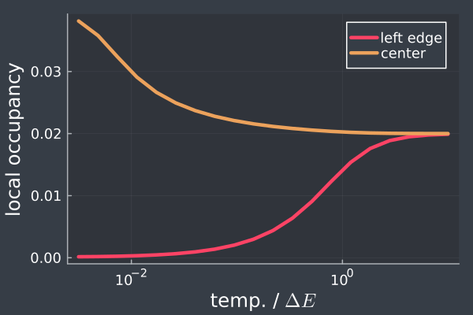

Quick-Start: Installation and a Concrete Example
This write-up is designed to show you very quickly how to start using this toolkit. It demonstrates the typical kind of calculations that are possible using the fermions.jl library.
Installation
The system must have a running Julia installation in order to use fermions.jl:
# install Julia on Unix-ish systems
$ curl -fsSL https://install.julialang.org | sh
# install Julia on windows
> winget install julia -s msstoreOnce a running Julia environment is available, start the Julia REPL by running julia from a terminal, and run the following commands to install the fermions.jl library:
julia> import Pkg
julia> Pkg.add(url="https://github.com/abhirup-m/fermions.jl")Defining our Model - The Tight-Binding Model in One Dimension
The model considered here is a prototypical one, involving spinless electrons hopping on a 1D lattice, with open boundary conditions (the electrons cannot hop beyond the left and right edges of the chain).
 Schematic picture of the model being considered here. Circles represent lattice sites and arrows represent electron hopping processes across sites.
Schematic picture of the model being considered here. Circles represent lattice sites and arrows represent electron hopping processes across sites.
The Hamiltonian of the model is very simple; there are only two kinds of processes - one that starts from a lattice site $i$ and goes to the site next to it ($i+1$), and another one that goes to the site before it ($i-1$). In terms of operators, the Hamiltonian can be written as
\[H = \sum_i \left(c^\dagger_i c_{i+1} + c^\dagger_{i+1}c_i\right)~.\]
In this write-up, we will now show how to accomplish the following:
Define the above Hamiltonian and diagonalise it to obtain the spectrum.
Analyse the ground state and calculate the distribution of particles on the lattice in the ground state.
Calculate thermal correlation functions such as the local particle density at a non-zero temperature.
Calculate other useful quantities such as the entanglement of a region of space and the spectral function.
This quick-start example is also available as a notebook.
Importing Packages
using fermions # Importing fermions.jl library
using Plots, Measures # Importing tools for plotting
Plots.theme(:dark)Defining Basis States
Most applications of this libray require us to define a choice of basis states. The most convenient basis for us is the real space basis, consisting of states such [1, 0, 1, 1, ..., 0, 1], where each number in the vector can be 0 or 1, and the $i^\mathrm{th}$ number represents whether the $i^\mathrm{th}$ lattice site is occupied(1) or unoccupied(0). Within the library, we define the basis states using the function BasisStates:
basis = fermions.BasisStates(numSites, occupancy)Here, the first argument numSites is an Int that represents the number of lattice sites that must be taken into account while creating the basis, while the second (optional) argument occupancy is another Int which represents the number of occupied particles in the basis states. For example, if we choose basis = fermions.BasisStates(2, 1), that will return the basis states involving two lattice sites and one electron occupying those sites, leading to the basis [1, 0], [0, 1].
numSites = 2 # number of lattice sites
occupancy = 1
basis = fermions.BasisStates(numSites, occupancy) 2-element Vector{Dict{BitVector, Float64}}:
Dict([1, 0] => 1.0)
Dict([0, 1] => 1.0)The two basis states show the two possible combinations: [1, 0] is the state with the first site occupied and the second site unoccupied, while [0, 1] has the opposite configuration.
Creating the Hamiltonian
Any general second-quantised Hamiltonian can be represented, while using the library, as a 1D array. In order to explain how to create the Hamiltonian, we will start by giving a very simple example. The (non-Hermitian) Hamiltonian $c^\dagger_1 c_2 - c^\dagger_3 c_4$ is represented as
H = [
("+-", [1, 2], 1.0),
("+-", [3, 4], -1.0),
]Each tuple (...) within the array represents a term of the full Hamiltonian. The term $c^\dagger_1 c_2$ is represented by the first tuple ("+-", [1, 2], 1.0); the string "+-" encodes the fact that the operator is a product of a creation operator(+) and an annihilation operator(-), the vector [1,2] indicates that the + and - operators act on the first and second indices within in each basis states, and the third (Float) 1.0 indicates the strength of this term.
The second tuple ("+-", [3, 4], -1.0) can be understood as a representation of the second operator $- c^\dagger_3 c_4$ in the same way.
# designing the tight-binding Hamiltonian
function TightBindHamiltonian(numSites)
# define the array of tuples to store all terms in the Hamiltonian
hamiltonianTerms = Tuple{String, Vector{Int64}, Float64}[]
# loop over all lattice sites (skip the end, because we have c^\dagger_i+1
for i in 1:numSites-1
# the term c^\dagger_i c_i+1
term1 = ("+-", [i, i+1], 1.0)
# the term c^\dagger_i+1 c_i
term2 = ("+-", [i+1, i], 1.0)
# add both terms to the Hamiltonian
push!(hamiltonianTerms, term1)
push!(hamiltonianTerms, term2)
end
return hamiltonianTerms
endCalculating Correlations: Local Probability Distribution
Correlations are expectation values of observable operators, computed in the ground state: $\langle\Psi_\mathrm{gs}|\hat O|\Psi_\mathrm{gs}\rangle$. Any such expectation value can be calculated using the function GenCorrelation(state, operator), where state can be one of the eigenstates (where we want to compute the correlation), and operator has to be constructed in the same way as the Hamiltonian.
As another physically-motivated demonstration, we will now calculate the real-space distribution of the ground state function, which is just the likelyhood of finding the electron at a given point in space. The probablity distribution at the $i^\mathrm{th}$ lattice point is the expectation value
\[\langle\Psi_\mathrm{gs}|c^\dagger_i c_i |\Psi_\mathrm{gs}\rangle = \langle\Psi_\mathrm{gs}| \hat n_i |\Psi_\mathrm{gs}\rangle~,\]
where $\hat n$ is a shorthand for $c^\dagger c$, and is called the number operator. The object operator for this can therefore be constructed as operator=[("n", [i], 1.0)]. The complete thing is shown below.
# get basis, Hamiltonian and eigenvectors.
numSites = 50
basis = fermions.BasisStates(numSites, 1)
hamiltonian = TightBindHamiltonian(numSites)
eigvals, eigvecs = fermions.Spectrum(hamiltonian, basis)
# Define the local density operator, which is just the number operator n_i at a site i.
# Within the fermions.jl library, the number operator is represented using "n", just as c
# and c^† are represented using "-" and "+".
densityOperators = [[("n", [i], 1.0)] for i in 1:numSites]
# calculate the expectation value of the local density operator in the ground state
# and a mid-spectrum state. the expectation value is calculated using an internal
# function GenCorrelation(state, operator), which returns the quantity <state|operator|state>.
distribution_low = [fermions.GenCorrelation(eigvecs[1], operator) for operator in densityOperators]
distribution_mid = [fermions.GenCorrelation(eigvecs[div(numSites, 2)], operator) for operator in densityOperators]
Plots.scatter([distribution_low, distribution_mid], thickness_scaling=1.4, linewidth=3, legend=true,
xlabel="odd lattice sites", ylabel="probability distribution", labels=["ground state" "excited state"], margin=-1mm)
Real-space Entanglement
As a second demonstration of the physics, we calculate the entanglement entropy of real space regions. Entanglement entropy is a measure of entanglement, quantifying how much a region of space is "connected" to the other regions. The source of the connection is the presence of the hopping term in the hamiltonian; as the electron hops from one end of the system to the other, it carries information with it, leading to non-local connections between distant regions. fermions.jl provides several functions to calculate various entanglement measures such as the von Neumann entropy (vnEntropy()), mutual information (mutInfo) and tripartite information (tripInfo). For this model, we will just calculate the von Neumann entropy of any given lattice site $i$, through the function call vnEntropy(state, [i]), where state is as usual the ground state, and [i] indicates the set of indices whose entanglement entropy will be calculated. Since we want to calculate the entropy of just the $i^\mathrm{th}$ site, the indices is a singleton set for us.
# define regions of space of increasing size
subsystemIndices = [[i] for i in 1:numSites]
# calculate entanglement entropy of these regions
SEE = [fermions.vnEntropy(eigvecs[1], indices) for indices in subsystemIndices]
Plots.plot(SEE, thickness_scaling=1.4, linewidth=3, legend=false,
xlabel="lattice site", ylabel="entanglement entropy", margin=-1mm)
Finite Temperature Calculations: Local Probability Distribution as a Function of Temperature
One can also calculate thermal averages using the library. Similar to the GenCorrelation function that computes expectation values in a particular state, the ThermalAverage(eigvecs, eigvals, operator, beta) function accepts the complete set of eigenvectors $\{X_i\}$ and eigenvalues $\{\varepsilon_i\}$, an operator $\hat O$ and an inverse temperature beta $\beta$, and calculates the thermal expectation value
\[\sum_i e^{-\beta \varepsilon_i}\langle X_i | \hat O | X_i \rangle~.\]
In the snippet below, we compute the thermal average of two operators, the probability of occupying the left edge $\hat n_1$, and the probability of occupying the central site $\hat n_{N/2}$.
# define a range of temperatures to perform calculations at
invTempRange = 10 .^ range(-1, 2.5, 20)
# define the operators whose thermal average we wish to calculate
leftOccOperator = [("n", [1], 1.0)] # occupancy of left edge
centerOccOperator = [("n", [div(numSites, 2)], 1.0)] # occupancy of center
# calculate thermal averages over the given range of inverse temperature
leftOccAverage = [fermions.ThermalAverage(eigvecs, eigvals, leftOccOperator, beta) for beta in invTempRange]
centerOccAverage = [fermions.ThermalAverage(eigvecs, eigvals, centerOccOperator, beta) for beta in invTempRange]
Plots.plot(1 ./ invTempRange, [leftOccAverage, centerOccAverage];
thickness_scaling=1.5, linewidth=3,
xaxis=:log10, xlabel="temp. / \$\\Delta E\$", ylabel="local occupancy",
labels=["left edge" "center"], leftmargin=-5mm, bottommargin=-3mm)
Spectral Function
As a final demonstration, we show how to calculate the local spectral function for the model. A spectral function $A(\omega)$ captures the probability of exciting the ground state of a system into an excited electron with a particular excitation energy $\omega$; a higher value of the spectral function at a particular frequency indicates a higher likelihood of exciting the system by shedding light of that frequency. Formally, the spectral function associated with the excitation operator $\hat O_1$ and the relaxation operator $\hat O_2$ is defined as
\[A(\omega) = -\frac{1}{\pi}\mathrm{Im}\left[\mathcal{F}_\omega(\langle \{\hat O_2(t),\hat O_1(0)\}\rangle)\right]~,\]
where $\mathcal{F}_\omega(\cdot)$ is the Fourier transform.
The spectral function is calculated using the provided function SpecFunc(eigvecs, eigvals, probe, probeDag, freqArr, broadening), where eigvecs, eigvals constitute the spectrum of the system, probe and probeDag are the excitation and relaxation operators $\hat O_1$ and $\hat O_2$, freqArr is the set of frequency points at which the spectral function must be calculated, and broadening is the width of the Lorentzian that will be used to replace poles. For the snippet below, we have taken the local operators $c_{N/2}$ and $c^\dagger_{N/2}$ as the excitation and relaxation operators.
numSites = 40 # number of lattice sites
# Get basis states for a system with 0, 1 and 2 occupied sites.
# The ground state will be taken from the 1 occupied site system,
# but the excitations will take it to the other systems.
basis_N = fermions.BasisStates(numSites, 1)
basis_Nminus1 = fermions.BasisStates(numSites, 0)
basis_Nplus1 = fermions.BasisStates(numSites, 2)
# diagonalise all three systems
tightBindHam = TightBindHamiltonian(numSites)
eigvals_N, eigvecs_N = fermions.Spectrum(tightBindHam, basis_N)
eigvals_Nminus1, eigvecs_Nminus1 = fermions.Spectrum(tightBindHam, basis_Nminus1)
eigvals_Nplus1, eigvecs_Nplus1 = fermions.Spectrum(tightBindHam, basis_Nplus1)
# define the set of frequency points
freqArr = collect(range(-2.5, stop=2.5, step=0.01))
# define the excitation and relaxation operators
probe = [("-", [div(numSites, 2)], 1.0)]
probeDag = [("+", [div(numSites, 2)], 1.0)]
# get spectral function
specfunc = fermions.SpecFunc([eigvals_N; eigvals_Nminus1; eigvals_Nplus1],
[eigvecs_N; eigvecs_Nminus1; eigvecs_Nplus1], probe, probeDag, freqArr, 1e-2)
p = Plots.plot(freqArr, specfunc, thickness_scaling=1.5, linewidth=2, legend=false,
xlabel="frequency \$\\omega\$", ylabel="spectral function\$", margin=-2mm)
display(p)